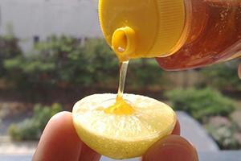
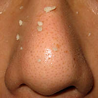

Clear blackhead


1. Tomatoes have natural antiseptic properties that dry up blackheads. Take a small tomato, peeled and mashed, then apply it over the blackheads before going to bed. Leave overnight and then wash your face with clean water in the morning.
2. Lemon is another natural ingredient that is effective in treating blackheads. Squeeze few drops of lemon juice in a bowl, add salt and stir the mixture well. Wash your face with warm water and apply the mixture on the blackheads. Leave for some 20 minutes and wash your face again with warm water.
3. Honey has antiseptic properties that work wonders for both oily skin and blackheads. Apply honey onto the affected area and wash off with warm water after 15 minutes.
4. A mixture of oatmeal and yogurt is good for the skin and helps banish blackheads. Mix 2 tablespoons of oatmeal with 3 tablespoons of yogurt, add 1 tablespoon of lemon juice and olive oil to it, mix all these ingredients well till it forms a paste. Apply the mixture on the face, leave for 10-15 minutes and wash your face with cold water.
5. Raw eggs are an effective home remedy to get rid of blackheads. Beat one to two egg whites, mixed with one tablespoon of honey. Apply this mixture over the area of blackheads, leave for 30 minutes and wash off with warm water.
Choose an appropiate technique only.